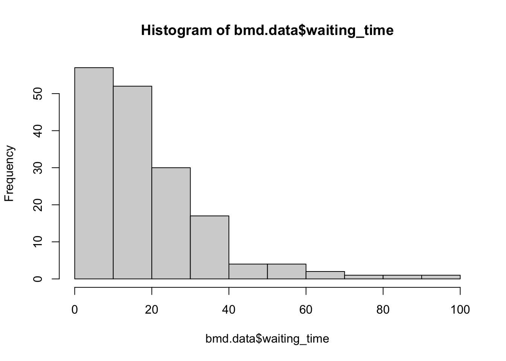
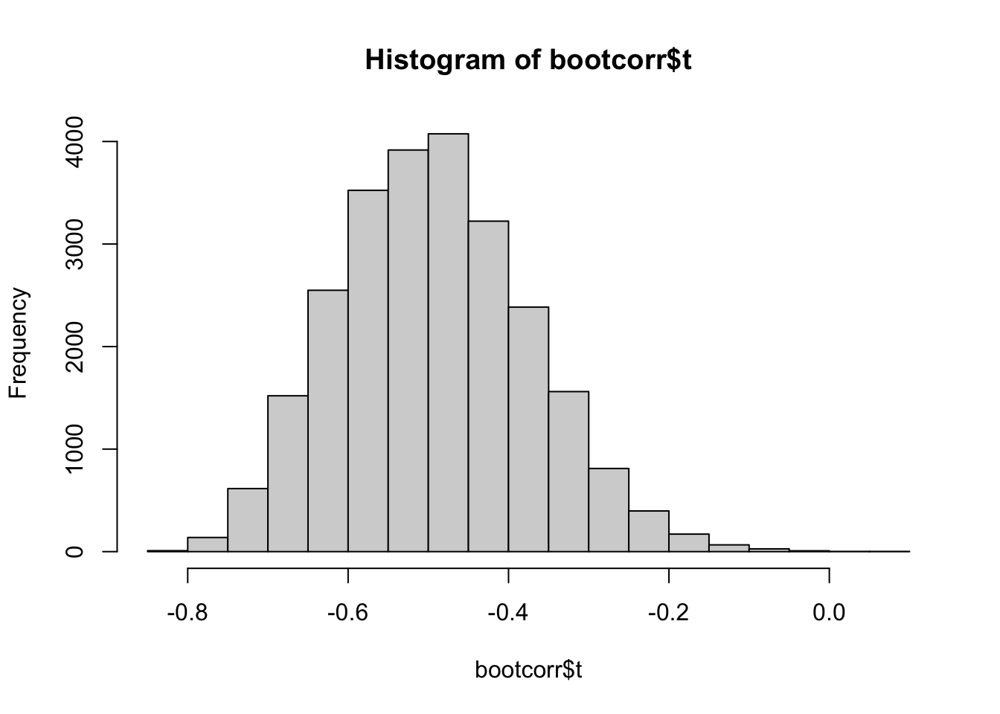

1 Bootstrap
1.1 Introduction
Bootstrap was proposed by Efron in 1979 and it mimics the sampling process by sampling with replacement the original sample. This process replicates the sample variation and allows the calculation of standard errors. It can also be used to refine more complex machine learning algorithms, as we will see later.
From the original sample of size \(n\), we create many (e.g. 10,000) samples of size \(n\) by sampling from the original sample with replacement. Notice that the replacement allows the same value to be included multiple times in the same sample. This is why you can create many different samples. For each of the bootstrapped samples we compute the statistics of interest. The standard deviation of all these computed statistics, is the standard error.
1.2 Readings
Read the following chapter of An introduction to statistical learning:
- 5.2 The Bootstrap
1.3 Practice session
Task - Confidence intervals with bootstrap
We will be using the bmd.csv dataset to plot the histogram, compute the median and 95% confidence interval for the “waiting_time”
Let’s first read the data and create the variable BMI that will be used later.
## Warning: package 'ggplot2' was built under R version 4.3.3library(boot) #library for bootstrap
library(pROC) #library for the ROC curve
library(Rmisc) #CI() function to compute conf interval
set.seed(1974)
#the option stringsAsFactors = TRUE in the command below converts
#string variables as sex into factor variables
bmd.data <- read.csv("https://www.dropbox.com/s/c6mhgatkotuze8o/bmd.csv?dl=1",
stringsAsFactors = TRUE)
#computes the BMI
bmd.data$bmi <- bmd.data$weight_kg / (bmd.data$height_cm/100)^2Let’s plot the histogram for waiting time and compute the median

## [1] 14And now use the function boot(), from the library boot, to bootstrap the median. We will also compute it manually
## [1] 14samplemedian <- function(x, d) { #need to define the function to use bootstrap
return(median(x[d])) #d is the index for the bootstrap
}
bootresults <- boot(bmd.data$waiting_time, statistic=samplemedian, R=10000)
# get 95% confidence interval
boot.ci(bootresults, type="perc")## BOOTSTRAP CONFIDENCE INTERVAL CALCULATIONS
## Based on 10000 bootstrap replicates
##
## CALL :
## boot.ci(boot.out = bootresults, type = "perc")
##
## Intervals :
## Level Percentile
## 95% (13, 18 )
## Calculations and Intervals on Original Scale#manual bootstrap
median.bs <- NA
for (i in 1:10000){ # change to 10000
sample.bs <- sample(bmd.data$waiting_time, 169, replace = TRUE)
median.bs[i] <- median(sample.bs)
}
median(median.bs) #median (could use mean) of all the bootstrapped medians## [1] 14## [1] 1.34752## 2.5% 97.5%
## 12 18TRY IT YOURSELF:
- Compute the mean for waiting_time and the usual 95% confidence interval using the CI() function.
See the solution code
- Compute the 95% confidence interval for the mean using the boot function
See the solution code
1.4 Exercises
Solve the following exercises:
The diabetes data were provided by Hastie and Tibshirani (1990, p. 6). The observations arise from a study of the factors affecting patterns of insulin-dependent diabetes mellitus in 43 children (Sockett et al., 1987). The aim was to investigate the dependence of serum C-peptide on other factors, better to understand the patterns of residual insulin secretion.
The response, cpep, is the log of C-peptide concentration at diagnosis, and the selected covariates are age, the child’s age at diagnosis, and base, minus their base deficit. Base deficit is a measure of acidity.
Calculate the Pearson correlation coefficient between cpep and base with the respective 95% confidence interval obtained by the Fisher’s z-transformation (the usual way of getting the confidence interval for the Pearson’s correlation)
Note: you can use the function CIr in the “psychometric” packageWrite your own function to compute the 95% confidence interval for the above correlation, using bootstrap.
Use the function boot() from the boot package to compute the 95% confidence interval through bootstrap
Plot the histogram with the correlations obtained in the bootstrap samples.
See the solution code
#install.packages("psychometric") # install package with function for
# the correlation confidence interval
#install.packages("boot") # install package for bootstrap function
library(boot)
library(psychometric) ## Warning: package 'dplyr' was built under R version 4.3.1## Warning: package 'purrr' was built under R version 4.3.3set.seed(1001)
myData <- read.csv("https://www.dropbox.com/s/6rc00ealjtyp3qi/diabetes.csv?dl=1")
sample.size <- dim(myData)[1] #nr of observations
#1 - the Person correlation
cor(myData$base, myData$cpep)
CIr( r = cor(myData$base, myData$cpep), #conf interval using
n = sample.size, level = .95) # Fisher's z-transformations
#2 - Bootstrap
n.boot <- 25000 #choose how many bootstraps
cor.boot <- NULL # to store the bootstrap correlations
#manually implementing bootstrap
for (i in 1:n.boot) {
id.bs <- sample.int(sample.size, #bootstrap the
sample.size, #original sample
replace = TRUE)
cor.boot[i] <- cor(myData[id.bs, ])[2,3] #Compute correlation
#between
}
quantile(cor.boot, c(0.025, 0.975)) #95% confidence interval
#3 - Using the boot() function
sample.corr <- function(data, d) {
return(cor(data$base[d], data$cpep[d])) #d is the index for the bootstrap
}
bootcorr <- boot(myData,
statistic=sample.corr,
R=n.boot)
# get 95% confidence interval
boot.ci(bootcorr, type="perc")
#4 - Histogram
#the correlations for the bootstrap samples
#are stored in bootcorr$t
hist(bootcorr$t)